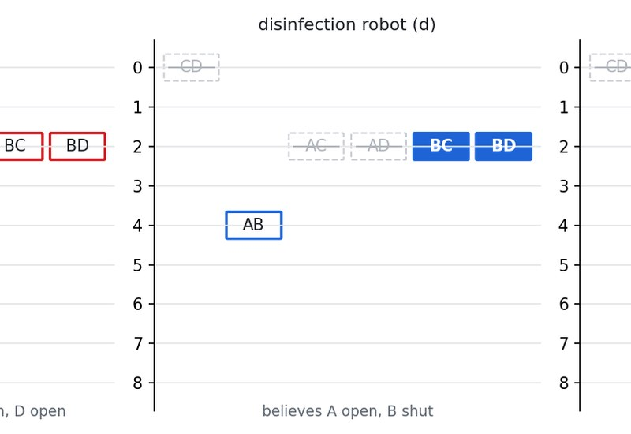
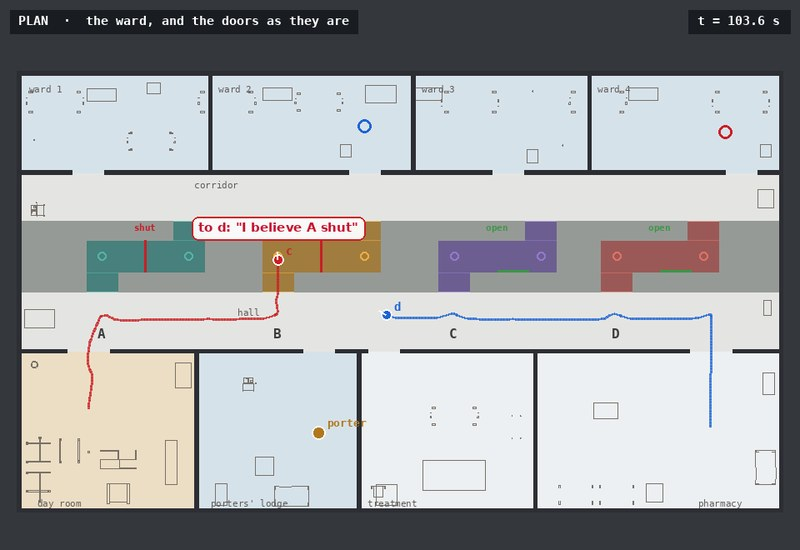
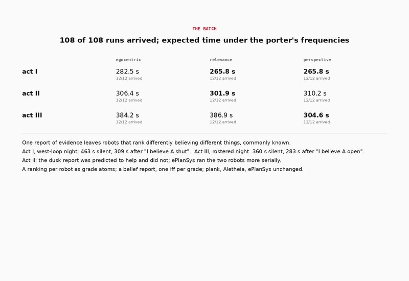
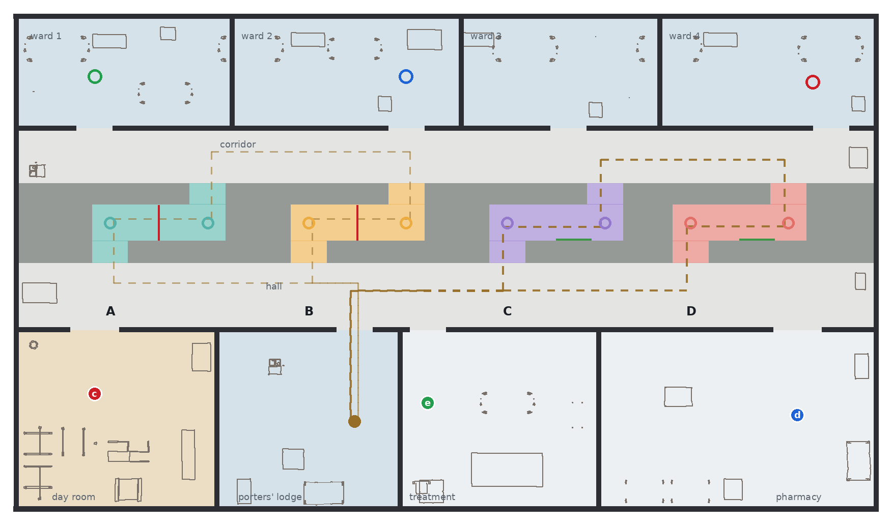
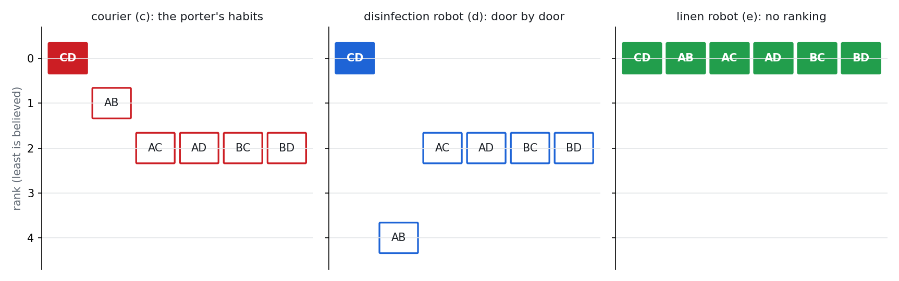
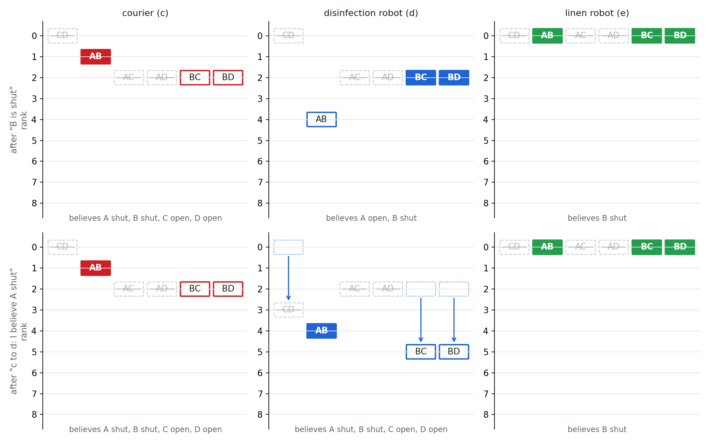
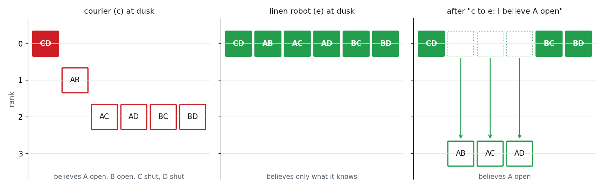
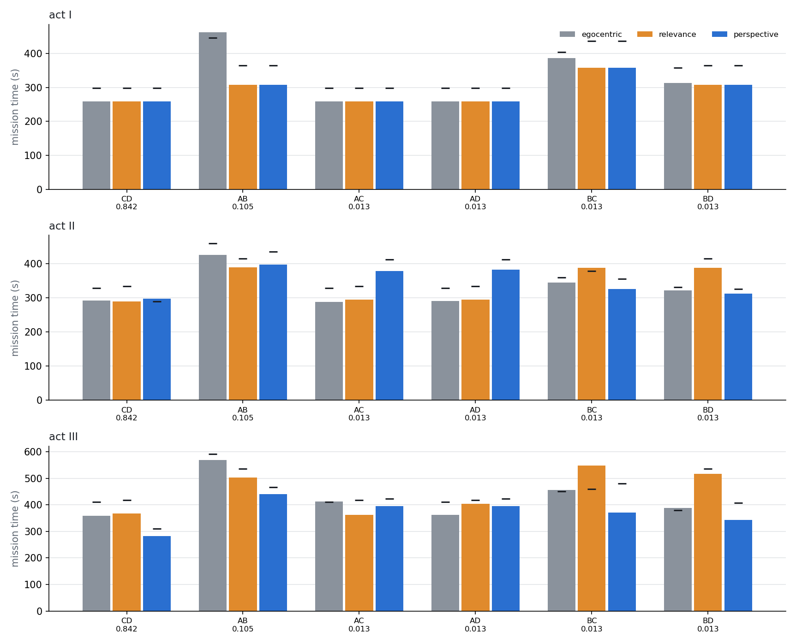
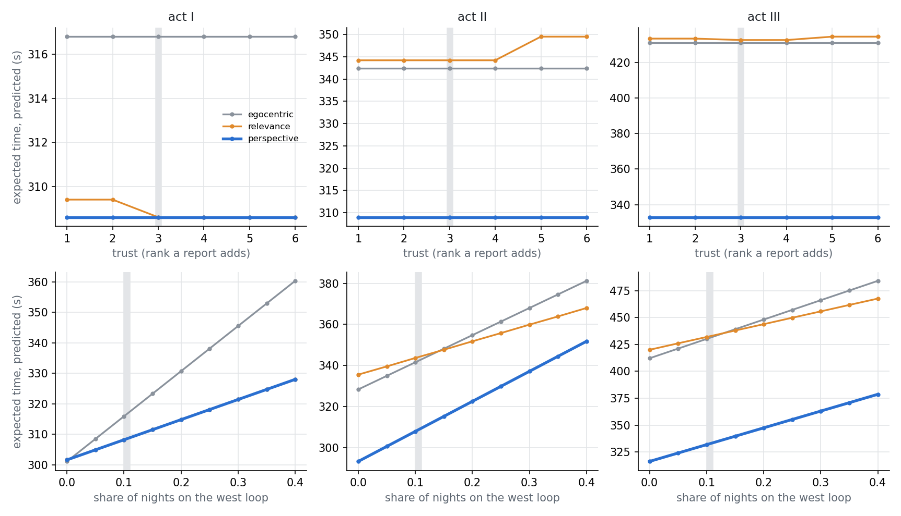

Belief revision · a ranking per robot · belief reports weighed by trust · second-order guards · three robots · ROS 2
The ward of belief revision in a changing ward, a week later. At one in the morning the night porter walks a loop through the band of linen rooms, north through one fire door and south through another, and shuts both. No robot sees him. Three robots of three makers must then cross the band to the wards: the hospital's courier, a contractor's disinfection robot and another contractor's linen robot.
Each ranks the six loops its maker's way. The courier knows the porter's habits; the disinfection robot keeps a map of independent cells and ranks a loop by how many doors it changes; the linen robot ranks nothing and believes only what it knows. The same report of a shut door therefore leaves them believing different things, and since each robot knows the others' rankings, each knows what the others believe. The first demonstration showed that, with one shared ranking, a report of evidence carries the belief; in a mixed fleet it carries the evidence and nothing more.
Here the epistemic state carries one ranking per robot, as grade atoms in every world, and a robot may report a belief: “I believe door A is shut”. A listener that takes the speaker's word raises its rank of every world the report rules out by its trust; one that does not is not moved. The report is guarded by a second-order belief, which the executor checks before it dispatches it: the courier may say it only if it believes it, does not know it, and believes the listener does not believe it. Three formulations differ in what the courier says: nothing, because it takes the others to rank as it does; every belief its listener lacks; or what it predicts, on the beliefs the others do hold, will bring the last robot to its ward sooner.
Every robot reached its bed in all 108 runs. Telling what it predicted would help, the courier brought the fleet in sooner in expectation in acts I and III, 265.8 and 304.6 s against 282.5 and 384.2 s silent; on the west-loop night of act I, 309 s against 463. In act II its one report at dusk was predicted to help and did not: 310.2 s against 306.4, because ePlanSys schedules the two robots more serially than the planner assumed. Telling every belief the listener lacks gained in act I and nothing in acts II and III (301.9 and 386.9 s).
Package mixed_fleet_demo; policies executed by eplansys, the problems grounded by plank, the policies validated by Aletheia's plugin and replayed through an independent product update at every node, the ward furnished with Open Robotics' hospital models from Gazebo Fuel[22]. Nothing in plank, Aletheia or ePlanSys was changed; the runs use the executor patch of the first demonstration. Full account in Belief Revision in a Mixed Fleet (PDF): the encoding, the propositions and their proofs, the policies, the batch and the implementation findings.
The runs
| take | night | executor | arrived | time |
|---|---|---|---|---|
| act I, egocentric | A-B, the west loop | SUCCESS | yes | 423.4 s |
| act I, perspective | A-B, the west loop | SUCCESS | yes | 310.3 s |
| act III, egocentric | C-D, the rostered loop | SUCCESS | yes | 374.1 s |
| act III, perspective | C-D, the rostered loop | SUCCESS | yes | 309.0 s |
| act III, perspective | A-B, the west loop | SUCCESS | yes | 451.5 s |
What the runs show

Evidence One report, three beliefs, all commonly known The courier reports door B shut. Each robot revises by its own ranking: the courier now believes A shut, the disinfection robot A open, the linen robot neither, and each knows what the others believe. Robots that share a ranking cannot commonly know they disagree; these can. See the revision →
Testimony A belief told, weighed by trust "I believe door A is shut." The listener raises its rank of every loop with A open by its trust, three, and now believes A shut too: an event with one assignment per grade atom, guarded by a second-order belief the executor checks before the courier speaks. See the testimony →
Evaluation 80 s sooner with three robots In expectation over the porter's nights, the courier that tells what it predicts will help took 265.8, 310.2 and 304.6 s in acts I to III, against 282.5, 306.4 and 384.2 s silent: a gain where a report corrects a revision or spares a queue, none where the executor left no queue to spare. See the evaluation →Environment
The floor is the first demonstration's ward: a single storey of 28 by 16 m with rooms off a hall to the south, a band of linen rooms crossed by four fire lobbies, A to D from west to east, a corridor north of the band and four ward bays off it. Each lobby runs north from the hall, turns east along a jog and north again to the corridor, and its door stands across the jog, so a door is decided only by a laser at a bend inside its lobby. The floor plan is checked for this in all sixteen states of the doors, and every route of the roadmap keeps 0.47 m from anything a robot can hit (tools/check_views.py).

| robot | maker | ranking of the loops | route | takes the courier's word |
|---|---|---|---|---|
| c, courier | the hospital | the porter's habits: C-D 0, A-B 1, any other 2 | day room to ward 4 | – |
| d, disinfection | a contractor | door by door: doors differing from C-D's, so C-D 0, A-B 4, any other 2 | pharmacy to ward 2 | acts I and III |
| e, linen | another contractor | none: every loop 0 | treatment room to ward 1 | acts II and III |
On most nights the porter walks the rostered loop through C and D, on some the west loop through A and B, and on a few one of the other four: the expectations on this page weigh the nights by those frequencies, 0.842, 0.105 and 0.013 each, the courier's ranks read as orders of magnitude. Every robot knows every robot's ranking and who takes whose word, as the makers publish them.
Ranks per robot
A world is the loop the porter walked; the robots know all six are possible. A Spohn ranking[1] gives each world a natural number, 0 for what is believed and higher for what would surprise more, and a robot believes what holds at the least-ranked worlds it cannot rule out. Here every robot has its own, and every world of the epistemic state carries, for every robot \(r\), that robot's rank of it as a grade atom \(g^r_0, \dots, g^r_{9}\). Every relation stays an equivalence, and belief is a formula over knowledge and the robot's own grades:
\[ B_r\,\varphi \;=\; \bigvee_{k} \Big( K_r \textstyle\bigwedge_{j<k} \neg g^r_j \;\wedge\; \hat K_r\, g^r_k \;\wedge\; K_r(g^r_k \rightarrow \varphi) \Big) \]
The formula nests: \(\varphi\) may hold another robot's belief, and \(B_c\,\neg B_d\,\varphi\), the courier believes that the disinfection robot does not believe \(\varphi\), is a formula the executor evaluates on six worlds. A robot enters a lobby only if it does not believe its door shut, seeks along the hall only if it does not believe every door ahead shut, and crosses only a door it knows to be open; the executor checks each guard before it dispatches the action.

Evidence
On the west-loop night of act III, with the silent courier, the courier enters lobby B, finds the door shut and reports it. The report is a public announcement whose precondition is that the courier knows door B shut; every robot conditions on it, by its own ranking, and the three are left with the same three loops, A-B, B-C and B-D, and three different beliefs:

Each robot knows what the others believe, since it knows their rankings and the report was public. On the model the product update of the grounded task produces at that node, it is common knowledge among the three robots that the courier believes door A shut, the disinfection robot believes it open, and the linen robot believes neither: \[C_{\{c,d,e\}}(B_c\,\neg\mathit{open}_a \wedge B_d\,\mathit{open}_a \wedge \neg B_e\,\mathit{open}_a \wedge \neg B_e\,\neg\mathit{open}_a)\] (tools/agreement.py). Robots that share a ranking cannot be in this position: if what each believes about a door is common knowledge among them, they believe the same (Proposition 3, after Aumann[10] and Bacharach[11]).
Testimony
A robot \(s\) may tell a robot \(l\) that it believes a door shut, or open. Everyone hears it. If \(l\) takes \(s\)'s word, it raises its rank of every world where the report is false by its trust, \(\alpha = 3\): the report is treated as evidence that would be wrong only with rank \(\alpha\), Spohn's conditioning on evidence of strength \(\alpha\) in Shenoy's form[2], and the product update with a two-event plausibility model whose ranks add[7][5]. A robot that does not take \(s\)'s word is not moved. The report is an EPDDL event:
Unlike the radical upgrade, after which the last report wins[6], graded reports add and commute: two speakers the listener trusts alike, saying opposite things, cancel. And once the listener learns whether \(\varphi\), the report leaves no trace on what it believes (Proposition 4).

The first version of the event wrote the grade shift as conditional effects, one per grade. plank compiles several conditional effects on one atom into the conjunction of their assignments, which loses an atom one adds and another deletes: after a report the listener had no grade at the shifted worlds. The policy checker found it at the first belief report it replayed; the domain now writes one iff per grade atom, an assignment plank compiles as written.
What the courier says
Every robot routes itself on its own beliefs: it minimises the time it expects to take to its bed, each world of its cell weighted \(\varepsilon^{\,\mathrm{rank}}\) with \(\varepsilon = 1/8\), its own looks branching the plan, and it never drives to a door it believes shut. Every robot reports a door it finds shut at once. Only the courier may report a belief, and the formulations differ only in which it reports:
| formulation | what the courier says |
|---|---|
| egocentric | It takes the others to rank as it does. By its own lights the evidence then carries its beliefs, so none of them is ever news to anyone: it says nothing. Its policy is, in every act, the policy in which nobody reports a belief (tools/validate.sh), the first demonstration's protocol. |
| relevance | Every belief its guard allows, as soon as the guard allows it, each once to each listener: every belief it believes the listener lacks. |
| perspective | A belief when telling it lowers the fleet's expected time to the last delivery, each world of its cell weighted by its own ranks, and the others predicted on the rankings and trust they do have: a rollout, one step of lookahead over the policy without reports[15]. |
The team's policy is one tree, built in the order ePlanSys dispatches it, and written in Aletheia's format by tools/plan.py, the planner the AletheiaPlanSolver plugin calls; the plugin validates the policy against the grounded task before the executor runs it. Every policy is also replayed through an independent implementation of the product update, and at every node every robot's cell, grades and belief read off the model are checked against the planner's own: 3 888 checks over the twelve policies, with no disagreement and no grade at its cap.
The three acts
Act I, the courier and the disinfection robot. The courier leaves the day room for ward 4 and the disinfection robot the pharmacy for ward 2. At dusk both believe the rostered loop, so A and B open, and both make for B, the courier from the west and the disinfection robot from the east. On the west-loop night the courier enters lobby B first, finds the door shut and reports it. It now believes the west loop, so A shut as well; the disinfection robot, whose two least loops left are B-C and B-D, believes A open, and both know it. The egocentric courier, taking the other to rank as it does, says nothing, and the disinfection robot drives on to A, finds it shut, and only then goes east to C: 463.2 s on that night. Under relevance and perspective the courier says "I believe door A is shut". The disinfection robot raises B-C and B-D from rank 2 to 5, now believes the west loop too, and turns east for C: 308.6 s. On the rare nights B-C and B-D the report is wrong, A is open, and the disinfection robot is sent the long way.
| night | freq. | egocentric: reports | time | relevance: reports | time | perspective: reports | time |
|---|---|---|---|---|---|---|---|
| CD | 0.842 | nothing | 258 s | nothing | 258 s | nothing | 258 s |
| AB | 0.105 | c: B shut; d: A shut | 463 s | c: B shut; c→d: “A shut” | 309 s | c: B shut; c→d: “A shut” | 309 s |
| AC | 0.013 | nothing | 259 s | nothing | 259 s | nothing | 259 s |
| AD | 0.013 | nothing | 259 s | nothing | 259 s | nothing | 259 s |
| BC | 0.013 | c: B shut | 387 s | c: B shut; c→d: “A shut”; d: C shut | 359 s | c: B shut; c→d: “A shut”; d: C shut | 359 s |
| BD | 0.013 | c: B shut | 313 s | c: B shut; c→d: “A shut” | 308 s | c: B shut; c→d: “A shut” | 308 s |
Act II, the courier and the linen robot. The courier and the linen robot, which ranks nothing. At dusk the linen robot believes only that one of the six loops was walked; B is its nearer door, and it would make for it and wait in the hall while the courier, which also makes for B, goes through the lobby. Under perspective the courier tells it, before anyone moves, "I believe door A is open": the linen robot raises the three loops through A to rank 3, believes A open, and goes to A while the courier crosses at B. The courier predicted 289 s on the rostered night against 328 s for the silent courier; on the floor it took 296.9 s against 291.2 s. The wait at B it was to spare cost less than the planner's model of the executor's groups said, and the drive to A cost about as much (see the evaluation). Under relevance the courier tells it every belief it lacks, A open and B open both: the linen robot believes both, takes the nearer, B, and waits behind the courier, two reports later: 288.5 s. On the west-loop night, and on A-C and A-D, the report "A open" is wrong, and the linen robot finds A shut itself.
| night | freq. | egocentric: reports | time | relevance: reports | time | perspective: reports | time |
|---|---|---|---|---|---|---|---|
| CD | 0.842 | nothing | 291 s | c→e: “A open”; c→e: “B open” | 288 s | c→e: “A open” | 297 s |
| AB | 0.105 | c: B shut; e: A shut | 425 s | c→e: “A open”; c→e: “B open”; c: B shut; c→e: “A shut”; c→e: “C open”; c→e: “D open” | 389 s | c→e: “A open”; c: B shut; e: A shut | 397 s |
| AC | 0.013 | nothing | 288 s | c→e: “A open”; c→e: “B open” | 294 s | c→e: “A open” | 379 s |
| AD | 0.013 | nothing | 291 s | c→e: “A open”; c→e: “B open” | 295 s | c→e: “A open” | 382 s |
| BC | 0.013 | c: B shut | 344 s | c→e: “A open”; c→e: “B open”; c: B shut; c→e: “A shut”; c→e: “C open”; c→e: “D open”; e: C shut | 387 s | c→e: “A open”; c: B shut | 326 s |
| BD | 0.013 | c: B shut | 321 s | c→e: “A open”; c→e: “B open”; c: B shut; c→e: “A shut”; c→e: “C open”; c→e: “D open” | 388 s | c→e: “A open”; c: B shut | 312 s |
Act III, all three. All three robots, both contractors taking the courier's word. On the rostered night the silent courier leaves three robots making for lobby B, each waiting for the one before it; under perspective it tells the linen robot "I believe door A is open", as in act II, and the night takes 283.2 s against 359.8 s. On the west-loop night the courier finds B shut and reports it, and the three robots are left with three beliefs about A, commonly known. The courier tells the disinfection robot it believes A shut, as in act I; it does not tell the linen robot, which it told A open at dusk and which, heading for A, will see for itself: 440.0 s against 568.6 s. Relevance tells the linen robot A open and B open at dusk, and after the report A shut, C open and D open, five belief reports in all: 504.1 s.
| night | freq. | egocentric: reports | time | relevance: reports | time | perspective: reports | time |
|---|---|---|---|---|---|---|---|
| CD | 0.842 | nothing | 360 s | c→e: “A open”; c→e: “B open” | 368 s | c→e: “A open” | 283 s |
| AB | 0.105 | c: B shut; e: A shut | 569 s | c→e: “A open”; c→e: “B open”; c: B shut; c→d: “A shut”; c→e: “A shut”; c→e: “C open”; c→e: “D open” | 504 s | c→e: “A open”; c: B shut; c→d: “A shut”; e: A shut | 440 s |
| AC | 0.013 | nothing | 413 s | c→e: “A open”; c→e: “B open” | 363 s | c→e: “A open”; e: A shut | 396 s |
| AD | 0.013 | nothing | 363 s | c→e: “A open”; c→e: “B open” | 404 s | c→e: “A open”; e: A shut | 395 s |
| BC | 0.013 | c: B shut; c: C shut | 457 s | c→e: “A open”; c→e: “B open”; c: B shut; c→d: “A shut”; c→e: “A shut”; c→e: “C open”; c→e: “D open”; d: C shut | 548 s | c→e: “A open”; c: B shut; c→d: “A shut”; d: C shut | 372 s |
| BD | 0.013 | c: B shut | 388 s | c→e: “A open”; c→e: “B open”; c: B shut; c→d: “A shut”; c→e: “A shut”; c→e: “C open”; c→e: “D open” | 516 s | c→e: “A open”; c: B shut; c→d: “A shut” | 343 s |
Analysis
A ranked model is an epistemic model \((W, \{\sim_r\}, V)\) with every \(\sim_r\) an equivalence, designated worlds \(W_d\), and a ranking \(\kappa_r: W \to \mathbb{N}\) for every robot. Write \([w]_r\) for \(r\)'s cell at \(w\) and \(\min_{\kappa_r} X\) for the worlds of \(X\) of least \(\kappa_r\); then \(w \models B_r\varphi\) when \(\varphi\) holds throughout \(\min_{\kappa_r} [w]_r\). The compiled model labels each world with the atoms \(g^r_{\kappa_r(w)}\). Proofs are in the report.
Evaluation
Every night of every act was run under all three formulations in Gazebo, twice, with the porter walking his loop and swinging the doors, from the same starts perturbed by up to 5 cm and 5°. A run's time is measured from the start of its first action to the end of its last, in simulated seconds: the time the last robot reaches its bed. The expected time weights each night by the porter's frequencies.
| act | formulation | expected | predicted | rostered loop | west loop | arrived |
|---|---|---|---|---|---|---|
| I | egocentric | 282.5 s | 316.8 s | 258.5 s | 463.2 s | 12/12 |
| relevance | 265.8 s | 308.6 s | 258.5 s | 308.6 s | 12/12 | |
| perspective | 265.8 s | 308.6 s | 258.5 s | 308.6 s | 12/12 | |
| II | egocentric | 306.4 s | 342.4 s | 291.2 s | 425.4 s | 12/12 |
| relevance | 301.9 s | 344.2 s | 288.5 s | 389.2 s | 12/12 | |
| perspective | 310.2 s | 309.0 s | 296.9 s | 396.6 s | 12/12 | |
| III | egocentric | 384.2 s | 431.0 s | 359.8 s | 568.6 s | 12/12 |
| relevance | 386.9 s | 432.6 s | 367.8 s | 504.1 s | 12/12 | |
| perspective | 304.6 s | 332.9 s | 283.2 s | 440.0 s | 12/12 |
Expected: the mean time of each night's runs weighted by the porter's frequencies, the runs of formulations that plan the same path on a night pooled, since they are the same actions in the same order. Predicted: the same for the times tools/plan.py predicts. Rostered and west loop: the mean on the two likeliest nights. In bold, the least expected time of each act.

In act I the expected times were 282.5 s egocentric, 265.8 s relevance and 265.8 s perspective. In act II the expected times were 306.4 s egocentric, 301.9 s relevance and 310.2 s perspective. In act III the expected times were 384.2 s egocentric, 386.9 s relevance and 304.6 s perspective. The perspective courier had the least expected time in acts I and III, and not in act II. The courier chose its reports on the planner's own model of ePlanSys's groups, which runs two robots' actions together wherever they are independent in the domain. ePlanSys's scheduler, ported to tools/schedule.py and run over the same policies, keeps apart two drives that end at one place and holds a branching look's group until its longest member ends. On that schedule the perspective courier saves 12.7 s in act I, 5.1 s in act II, 72.6 s in act III, against 8.2, 33.4, 98.1 s on the planner's model, and the batch measured 16.7, -3.8, 79.6 s. The report that corrects a robot's revision after a surprise pays on the floor; the one that only steers a route at dusk pays where the schedule leaves a queue to avoid, as with three robots at one lobby, and not where it does not, as with two. Without pooling the runs of identical paths the expected times were act I 285.4, 265.0, 263.7; act II 306.4, 301.9, 310.2; act III 384.2, 386.9, 304.6 s, in the same order. The planner's predicted times exceeded the measured by 39.3 s on average (10 %): the robots drive faster than the planner's 0.17 m/s, and a look takes half its declared seven seconds.
| act | formulation | planner's model | ePlanSys's schedule | measured |
|---|---|---|---|---|
| I | relevance | +8.2 s | +12.7 s | +16.7 s |
| perspective | +8.2 s | +12.7 s | +16.7 s | |
| II | relevance | -1.8 s | -4.9 s | +4.5 s |
| perspective | +33.4 s | +5.1 s | -3.8 s | |
| III | relevance | -1.6 s | +5.0 s | -2.7 s |
| perspective | +98.1 s | +72.6 s | +79.6 s |
Expected seconds saved against the silent, egocentric courier, over the porter's nights: as the courier predicted them, on the planner's model of ePlanSys's groups; as ePlanSys's own schedule of the same policies predicts them (tools/schedule.py, the executor's scheduler ported); and as the batch measured them.

These are predictions, on the planner's own model of the groups. Planned again with the listeners' trust from 1 to 6, the perspective policy's predicted expected time did not change in any act: a report too weak to change what the disinfection robot believes still changes where it goes, because ranks weigh its expected time as orders of magnitude, and the linen robot, ranking nothing, is moved by any trust. Charged under other shares of west-loop nights, the perspective policy's predicted expected time was at most the silent courier's in act I for shares 0.05 to 0.4; in act II for shares 0.0 to 0.4; in act III for shares 0.0 to 0.4.
Implementation findings
References
Reproduction
bash tools/validate.sh # floor, problems, every policy against the product update, Aletheia python3 tools/plan.py --act 3 --formulation perspective --show python3 tools/agreement.py --act 3 --night AB # the disagreement every robot knows of bash tools/run_one.sh 3 2 perspective RUN 1 # act III, the west-loop night, lane 1 SEEDS_1="$(seq -s ' ' 1 12)" SEEDS_2="$(seq -s ' ' 1 12)" SEEDS_3="$(seq -s ' ' 1 12)" bash tools/batch.sh BATCH 6 python3 tools/analyse.py BATCH # runs.csv and analysis.json python3 tools/sensitivity.py # other trusts, other porters